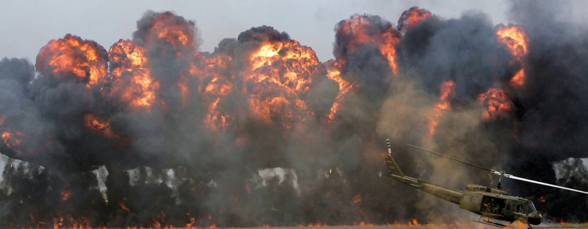

№ 01Геополитика
Время Великих войн

Начало специальной военной операции на Украине спровоцировало глубокую мировоззренческую перестройку внутри российского общества. Этот конфликт выступил катализатором внутреннего развития, позволив начать идеологическое восстановление после болезненного постсоветского периода 1990-х годов — эпохи, когда внешнее влияние (включая конституционное проектирование и финансирование политических институтов) достигало своего пика. В настоящее время в РФ наблюдается постепенная консолидация элит и общества вокруг тезиса о стране не как о рядовом государстве, а как о самостоятельной цивилизации с уникальной траекторией развития. Создаются общественные объединения, волонтеры народного фронта и прочие. Но самое важное то, что прямо сейчас в России формируется новая элита — те, на ком будет держаться благополучие государства: на ветеранах, народе из глубинок, который ни на секунду не оставался равнодушным, и именно такая структура заложет фундамент Величайшей России. Я сам много ездил по России и езжу до сих пор, я вижу это — то, в какой нравственной точке сейчас находится Российский народ и куда он пойдет.
Сегодня мир переживает тектоническую перестройку. Прежняя архитектура международной безопасности, основанная на ядерном сдерживании двух сверхдержав (СССР и США), окончательно демонтирована. Период исключительной гегемонии Вашингтона (1991– 2022 гг.) завершился. Человечество фиксирует нарастающую дисфункцию институтов вроде ООН, что парадоксальным образом повышает риски эскалации вплоть до ядерного конфликта.
СВО стало причиной крушения западной мировой гегемонии, и, я полагаю, что российское руководство само не до конца осознавало, что России придется воевать не против Украины, а всей Европы, причем почти что напрямую, и косвенно со всем Западом.
Европа цепляется с последними силами за сохранение своих колоний, пытается повернуть время вспять, но все тщетно, это уже бесполезно. Открытые попытки наращивания эскалации с Россией говорят о том, что они обезумели. США же, создав неугасаемый уровень напряженности на Ближнем Востоке, стараются выкачать как можно больше ресурсов из региона, чтобы поддержать свою экономику и подорвать авторитет военно-экономического щита сильнейшей страны Глобального Юга — Китая.
Война подкрадывается к странам словно вор, крадущийся в ночи.
Мы находимся в начале глобальнейших изменений: либо будет выстроена новая система глобальной безопасности с перемещением экономического центра тяжести на Восток, либо мир скатится к ограниченной войне с применением тактического ядерного и нейтронного вооружения. Этот сценарий — не гипотетическая угроза, а прямое следствие 500-летней эксплуатации Глобального Юга Западом. Сегодня Глобальный Юг стремительно набирает силу: бывшие колонии сбрасывают влияние метрополий. Ключевыми акторами восстания будут выступать государства Африки и весь евразийский Восток. Падение вассальных режимов и компрадорских элит Запада представляется неизбежным. Единственный открытый вопрос: решится ли коллективный Запад на полномасштабную войну или пассивно уступит свое ускользающее преимущество. Европе точно конец, но у США еще есть шансы сохраниться, и Трамп делает для этого все.
В текущей конфигурации Россия позиционирует себя как сила, освобождающая мир от западного доминирования. СВО создала новую разделительную линию между Западом и Востоком, окончательно разрушив каркас западной коллективной безопасности. Официально заявляю, что после начала этой войны человечество вступило в турбулентную эпоху продолжительностью до одного века, когда старые цивилизации рушатся, а новые — возвышаются на олимп. Это тяжелейшее, но очень интересное время.
Универсальная формула развития государства включает три этапа: укрепление вертикали власти и государственного авторитета; духовно-культурное оздоровление общества в связке с решением экономических и внешнеполитических задач; решение сложных социальных вопросов (пенсии, оплата труда и пр.). Однако применительно к России все сложнее из-за текущих тектонических сдвигов, а также ее геоположения. Важнейшим фактором обеспечения успеха России на долгие десятилетия вперед — это еще и передислокация основной части промышленных сил на восток, где удобнее всего торговать с Глобальным Югом и строить новейшие евразийские экономические пути. Если основная Россия останется в европе, то цикличные столкновения с Европой (не только с применением вооруженных сил) будут продолжаться.
Ключевой фактор исторической устойчивости России, позволивший победить Наполеона и Гитлера, расширить Кавказ и Новороссию, — это Сибирь. Обретение Сибири после правления Ивана IV дало колоссальные запасы полезных ископаемых, дешевая нефть и CH4. Экспансия на восток стала экзистенциальным драйвером развития, а, насколько мы знаем, История циклична, поэтому все должны ее знать, чтобы не допустить фатальных ошибок.
Я считаю, что для РФ сейчас крайне важно, выступая геополитическим пограничником, выстраивать новые евразийские торговые пути и углублять интеграцию в БРИКС, ШОС, ЕАЭС. Критическая ошибка была допущена Российской администрацией в 2018–2020 гг., когда отсутствовал убедительный военный сигнал Европе по поводу вооружения Украины: Россия должна была должным образом пригрозить ядерным оружием. Это могло бы предотвратить острую фазу конфликта. В наши дни выходит, что главный фактор сдерживания, за который сражались граждане СССР в XX веке попросту игнорируется.
И черная земная кровь сулит нам, раздувая вены, все разрушая рубежи, неслыханные перемены, невиданные мятежи. — Александр Блок
Я убежден, что при ныне разрушенной системе международной безопасности РФ следует настойчиво транслировать европейцам идею о беспрецедентной ядерной угрозе, чтобы избежать глобальной войны и сосредоточиться на строительстве нового миропорядка. Украинский кризис целесообразно завершить, однако и затягивание времени несет выгоду: внутри страны продолжается процесс очищения от компрадорских элементов. Другим плюсом в затягивании войны является недопущение Западных ЛГБТ движений, пропаганды и какого-либо влияния этого направления в России. Но, разумеется, я очень жду остановку конфликта уже сейчас, так как Россия совершенно экономически не готова к полномасштабной войне с Европой, которая может начаться уже очень скоро.
Если переговоры провалятся, а они уже авансом провалены, завершать СВО предлагаю следующими двумя этапами: освобождением всей Новороссии (взятие Полтавы, Харькова и др.), лишением Украины выхода к морю и продвижением к Приднестровью, а в случае эскалации с Европой — жесткими военными ответами.
Россия не наступает на Киев и не ведет войну должным образом, потому что руководство этого попросту не хочет, и это максимально для меня странно, точно так же, как и блокировка мессенджеров, не угрожающих суверенитету РФ. Все это выглядит так, будто власти России не хотят победы и развития государства, а наоборот, желают ее разрушить. Блокировка таких платформ, как Meta — правильное решение, но Telegram не может и не мог представлять угрозу за исключением ботов по поиску личных данных, информации о каждом человеке. Сегодня мы видим, что темпы роста экономики за последние 2 месяца отрицательные, что меня нисколько не удивляет: огромные бюджетные потери из-за закона по утилизационному сбору, блокировки популярных интернет платформ и средств коммуникации, введения цензуры на искусственный интеллект и др. Это все нужно немедленно отменять. Также настоятельно рекомендую убрать настолько жесткий контроль малого и среднего бизнесов, сейчас это ни к чему. Советую создать в России новую идеологию, повышающую самосознание: важно построить новое общество, которое чтит учения Маркса, но и не погружается в них глубоко, которое основано на любви к семье, Родине и Богу, которое знает свою историю и умеет владеть оружием.
Чем ближе крах империи, тем безумнее ее законы.
Теперь о печальных сигналах: 50 лет назад Запад пытался построить систему управления миром через монополии, ТНК и НКО, но сегодня происходит обратное: государства набирают силу. Мир уже перешагнул порог повсеместного авторитарного управления (разрозненного по странам, а не единого мирового). Моя аналитика показывает, что следующие 20-25 лет не дают предпосылок для ослабления этого тренда. Контраст между 2000-ми и 2020-ми очевиден.
Никто никогда не вернется в 2007 год.
Мой главный стратегический совет заключается в том, что Россияне должны вернуться к себе домой, в Сибирь — на их настоящую Родину. Новая столица в Красноярске или на востоке, формирование великого этноса сибирян, чей характер непоколебим, — это путь к превращению страны в ведущую сверхдержаву. Сибирь должна быть озолочена, советую построить новые евразийские пути через Екатеринбург на юго-восток. Спустя 12 веков существования, провалов и подъемов страна должна занять законное место руководителя новой гелиоцентрической мировой системы. США же советовал бы сближаться с Россией и отдаляться от НАТО, что они, собственно, сейчас и делают. Молодцы.
По моим подсчетами, промежутке 2028-2029 гг. грядет полномасштабная война Европы и России. В связи с этим, необходимо во что бы то ни стало сделать так, чтобы термоядерное, ядерное и ядерное нейтронное оружия не были повсеместно применены, а только локально. А для этого человечеству крайне важно, чтобы Россия в полной мере вселила страх. США не будут воевать с Россией: они останутся в стороне и будут делать то же, что и делали Первой и Второй мировых войнах.
Европейцы не понимают по-хорошему, они начинают осознавать тяжесть только когда столкнуться с мощнейшим противовесом, и это нужно делать уже сейчас, иначе потом будет уже слишком поздно…